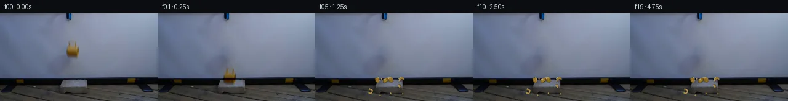

![首帧]()

Round 00
2026-11-05T13:28:10.838719+00:00像素候选变化代码 +241/−0inspection 更新
pixels ebe814644e918153 · code cab9127abd7b0b40
查看本轮 generate.py 真实 diff
--- previous/generate.py
+++ current/generate.py
@@ -0,0 +1,241 @@
+"""Local, deterministic image compositing and analytic fragment physics.
+No reference imagery, external models, engines, or network are used.
+"""
+from pathlib import Path
+import math
+import numpy as np
+from PIL import Image, ImageDraw, ImageFilter
+from scipy.ndimage import gaussian_filter, convolve, map_coordinates
+from artifact_io import save
+
+ROOT = Path(__file__).resolve().parent
+TMP = ROOT / '.tmp'
+TMP.mkdir(exist_ok=True)
+SOURCE = np.asarray(Image.open(ROOT/'first_frame.png').convert('RGB')).copy()
+H, W = SOURCE.shape[:2]
+S = 4
+GRAVITY = 1280.0
+IMPACT = 0.25
+
+
+def restore_screen():
+ # The mask is authored here from observed coordinates, not an external input.
+ mask_im = Image.new('L', (W,H))
+ d = ImageDraw.Draw(mask_im)
+ d.ellipse((105,49,132,78), fill=255)
+ d.rounded_rectangle((109,41,128,62), radius=5, fill=255)
+ mask = np.asarray(mask_im)>0
+ work = SOURCE.astype(np.float64)
+ # Initialize with per-row interpolation across the small, masked screen area.
+ for y in range(40,80):
+ for x in range(104,134):
+ if mask[y,x]:
+ w = (x-103)/31
+ work[y,x] = (1-w)*SOURCE[y,103] + w*SOURCE[y,134]
+ kernel = np.array([[0,1,0],[1,0,1],[0,1,0]],dtype=float)*.25
+ for _ in range(1400):
+ for c in range(3):
+ avg = convolve(work[:,:,c], kernel, mode='nearest')
+ work[:,:,c][mask] = avg[mask]
+ clean = np.rint(work).clip(0,255).astype(np.uint8)
+ residual = SOURCE.astype(float)-clean.astype(float)
+ return clean, residual
+
+CLEAN, MUG = restore_screen()
+Image.fromarray(CLEAN).save(TMP/'restored_screen.png')
+
+
+def intact_mug(t):
+ drop = 16*t + .5*GRAVITY*t*t
+ angle = math.radians(4*t/IMPACT)
+ yy,xx = np.mgrid[0:H,0:W]
+ cx,cy = 118,59
+ tx,ty = cx-.9*t/IMPACT, cy+drop
+ x = math.cos(angle)*(xx-tx)+math.sin(angle)*(yy-ty)+cx
+ y = -math.sin(angle)*(xx-tx)+math.cos(angle)*(yy-ty)+cy
+ # Mild exposure motion blur, preserving the blur already in the source.
+ res = np.stack([map_coordinates(MUG[:,:,c],[y,x],order=1,mode='constant',cval=0) for c in range(3)],axis=-1)
+ if t:
+ res = .70*res + .15*np.roll(res,1,axis=0)+.15*np.roll(res,-1,axis=0)
+ return np.clip(CLEAN.astype(float)+res,0,255).astype(np.uint8)
+
+
+# Large pieces represent curved portions of the yellow mug's wall, base,
+# lip, and loop handle. Coordinates are intrinsic pixel-size polygons.
+SPECS = [
+ dict(name='left curved wall',shape=[(-4,-3),(-1,-4),(3,-2),(4,1),(1,3),(-4,2)], vx=-92,vd=15,vz=102,z=19,ang=-15,spin=-260, color=(153,117,40)),
+ dict(name='right rim',shape=[(-2,-4),(1,-5),(3,-2),(3,2),(0,4),(-2,3),(0,0)], vx=104,vd=-10,vz=116,z=20,ang=25,spin=330,color=(156,121,43)),
+ dict(name='large wall on block',shape=[(-4,-2),(-2,-4),(3,-3),(5,0),(2,3),(-2,2)],vx=20,vd=-5,vz=92,z=19,ang=-10,spin=230,color=(153,117,39)),
+ dict(name='base segment',shape=[(-4,-2),(-1,-4),(3,-3),(4,1),(2,3),(-2,2)],vx=73,vd=40,vz=42,z=18,ang=12,spin=-220,color=(136,103,33)),
+ dict(name='loop handle',shape=None,vx=-74,vd=26,vz=141,z=30,ang=10,spin=-310,color=(160,128,56)),
+ dict(name='small wall on block',shape=[(-3,-2),(0,-3),(3,-1),(1,2),(-2,2)],vx=-22,vd=1,vz=55,z=19,ang=60,spin=-240,color=(142,106,32)),
+ dict(name='front wall',shape=[(-3,-2),(-1,-3),(3,-1),(2,2),(-2,3)],vx=-51,vd=63,vz=52,z=19,ang=-35,spin=290,color=(157,121,40)),
+ dict(name='back lip',shape=[(-3,-1),(0,-2),(3,-1),(2,1),(-2,1)],vx=55,vd=-45,vz=130,z=22,ang=22,spin=310,color=(164,130,50)),
+]
+for i,(vx,vd,vz) in enumerate([(-130,16,62),(130,17,67),(-42,85,100),(83,63,95),(-64,-37,82),(20,66,68)]):
+ SPECS.append(dict(name=f'chip {i+1}', shape=[(-1.1,-.6),(.2,-1),(1.2,.6),(-.6,1)],vx=vx,vd=vd,vz=vz,z=19,ang=20*i,spin=350-40*i,color=(169,139,66)))
+
+
+def support(x,depth):
+ # A projected table plane and a 16 px tall brick with a trapezoidal top.
+ if 99 < x < 140.5 and -18 < depth < 1:
+ return 16.0
+ return 0.0
+
+
+def simulate(spec):
+ x = 118.0
… diff truncated; 154 more lines …